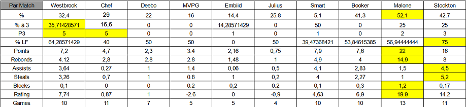

SCAN BASKET
- Next-Gen -

N'hesitez pas à visiter le plus beau club du département...
SCAN Basket
Records individuels
| Statistique | Nom du joueur | Nombre |
|---|---|---|
| Meilleur Marqueur ( Points) | Charline | 285 |
| Meilleure moyenne Points/Match | Charline | 22 |
| Meilleur Passeur ( Passe décisives ) | Pauline | 52 |
| Meilleure moyenne Passes/Match | Pauline | 4.5 |
| Meilleur Rebondeur ( Rebonds ) | Charline | 194 |
| Meilleure moyenne Rebonds/Match | Charline | 14.9 |
| Meilleur Intercepteur ( Interceptions ) | Pauline | 57 |
| Meilleure moyenne interceptions/Match | Pauline | 5.2 |
| Meilleur Contreur ( Contres ) | Charline | 15 |
| Meilleur moyenne Contre/Match | Charline | 1.2 |
| Meilleur Pourcentage au tir | Charline | 52.1 |
| 3 Points marqués | Amandine / Léonie | 5 |
| Meilleur Pourcentage à 3 points | Amandine | 36.7 |
| Lancers-francs marqués | Charline | 41 |
| Meilleur pourcentage au lancer-franc | Pauline | 75 |
Statistiques Records individuels de la saison 2021-2022

Palmarès
- Champion Challenge Départemental : 2019
- Séries d’invincibilité en 38-0 sur 4 années : 2018-2022